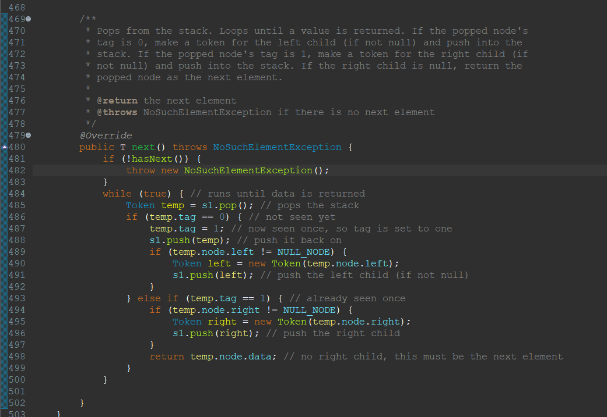
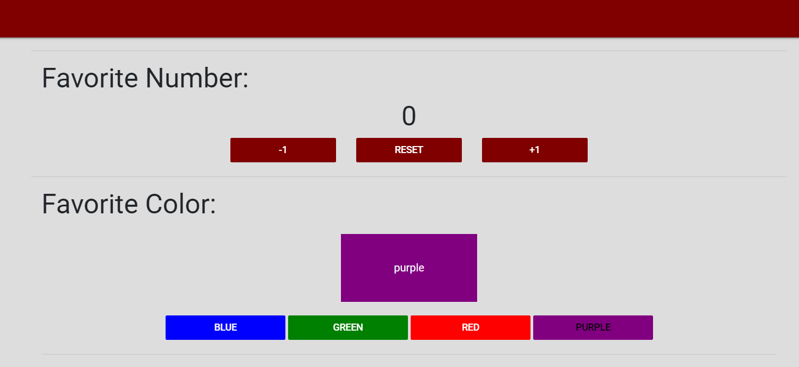

Portfolio
-
JavaSwing Joyride

My only actual project was implemented using JavaSwing, where I worked in a group to mimic the graphics and gameplay of 'JetPack Joyride' including collision logic. This was the final project for CSSE 220 and earned a high A.
-
Binary Search Trees
I'm currently taking CSSE 230, which is my first time encountering trees. I'm sure they will get more difficult, but I feel good about my understanding of them so far and I think it is pretty cool how there are multiple ways to implement them.
-
File I/O in C

In CSSE 132, where we coded in C, it was difficult getting used to a new editor and language. I still haven't reached the same level of confidence that I feel for Java. That being said, I think it is cool that C is more conscious of memory.
-
Favorite Things
Here's one of the homeworks that I recently completed for this class. Javascript is definitely going to take some getting used to, but I was able to get my desired results pretty quickly. I do find this class more satisfying than some of my other coding classes, as I'm actually making stuff rather than simply passing test cases.
As a freshman, and as someone who hadn't done much coding prior to college, I have only worked on one project. To fill in some of the gaps, I'll showcase some bits of code from my courses that I found to be interesting or enjoyable.